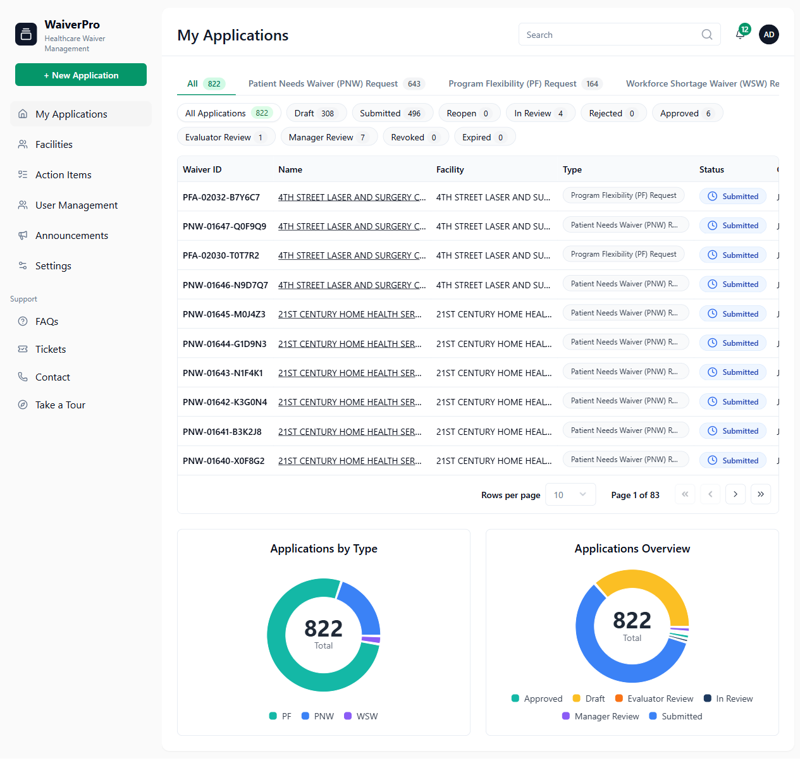

Generated: 28 June 2026 13:34
My Applications

| Component | Expected | Actual | Severity | Confidence |
|---|---|---|---|---|
| URL /dashboard/my-applications | URL /dashboard/my-applications | Not Found | Medium | 90% |
| The My Applications dashboard is your home screen. It lists your waiver applications and | The My Applications dashboard is your home screen. It lists your waiver applications and | Not Found | Medium | 90% |
| summarises them in two charts. | summarises them in two charts. | Not Found | Medium | 90% |
| summary charts. | summary charts. | Not Found | Medium | 90% |
| Filtering the list | Filtering the list | Not Found | Medium | 90% |
| Two layers of filters narrow the table, each showing a live count: | Two layers of filters narrow the table, each showing a live count: | Not Found | Medium | 90% |
| Waiver-type tabs — All, Patient Needs Waiver (PNW) Request, Program Flexibility | Waiver-type tabs — All, Patient Needs Waiver (PNW) Request, Program Flexibility | Not Found | Medium | 90% |
| Status chips — All Applications, Draft, Submitted, Reopen, In Review, Rejected, | Status chips — All Applications, Draft, Submitted, Reopen, In Review, Rejected, | Not Found | Medium | 90% |
| Approved, Evaluator Review, Manager Review, Revoked, and Expired. | Approved, Evaluator Review, Manager Review, Revoked, and Expired. | Not Found | Medium | 90% |
| Applications are listed with the columns Waiver ID, Name, Facility, Type, Status, and Created | Applications are listed with the columns Waiver ID, Name, Facility, Type, Status, and Created | Not Found | Medium | 90% |
| on. Use the Rows per page control and the page arrows to page through results. | on. Use the Rows per page control and the page arrows to page through results. | Not Found | Medium | 90% |
| Summary charts | Summary charts | Not Found | Medium | 90% |
| Applications by Type — a doughnut chart breaking your applications down by waiver type | Applications by Type — a doughnut chart breaking your applications down by waiver type | Not Found | Medium | 90% |
| (PNW, PF, WSW). | (PNW, PF, WSW). | Not Found | Medium | 90% |
| Applications Overview — a doughnut chart breaking your applications down by status. | Applications Overview — a doughnut chart breaking your applications down by status. | Not Found | Medium | 90% |
Compliance generated using deterministic fuzzy matching because the AI response was invalid.
| Component | Matched | Expected | Coverage |
|---|---|---|---|
| Buttons | 0 | 0 | 100% |
| Forms | 0 | 3 | 0% |
| Headings | 0 | 0 | 100% |
| Table_Headers | 6 | 6 | 100% |
| Cards | 0 | 0 | 100% |
| Badges | 0 | 0 | 100% |
| Tabs | 0 | 0 | 100% |
| Component | Expected | Actual | Severity | Confidence |
|---|---|---|---|---|
| URL /dashboard/my-applications | URL /dashboard/my-applications | Not Found | Medium | 90% |
| The My Applications dashboard is your home screen. It lists your waiver applications and | The My Applications dashboard is your home screen. It lists your waiver applications and | Not Found | Medium | 90% |
| summarises them in two charts. | summarises them in two charts. | Not Found | Medium | 90% |
| summary charts. | summary charts. | Not Found | Medium | 90% |
| Filtering the list | Filtering the list | Not Found | Medium | 90% |
| Two layers of filters narrow the table, each showing a live count: | Two layers of filters narrow the table, each showing a live count: | Not Found | Medium | 90% |
| Waiver-type tabs — All, Patient Needs Waiver (PNW) Request, Program Flexibility | Waiver-type tabs — All, Patient Needs Waiver (PNW) Request, Program Flexibility | Not Found | Medium | 90% |
| Status chips — All Applications, Draft, Submitted, Reopen, In Review, Rejected, | Status chips — All Applications, Draft, Submitted, Reopen, In Review, Rejected, | Not Found | Medium | 90% |
| Approved, Evaluator Review, Manager Review, Revoked, and Expired. | Approved, Evaluator Review, Manager Review, Revoked, and Expired. | Not Found | Medium | 90% |
| Applications are listed with the columns Waiver ID, Name, Facility, Type, Status, and Created | Applications are listed with the columns Waiver ID, Name, Facility, Type, Status, and Created | Not Found | Medium | 90% |
| on. Use the Rows per page control and the page arrows to page through results. | on. Use the Rows per page control and the page arrows to page through results. | Not Found | Medium | 90% |
| Summary charts | Summary charts | Not Found | Medium | 90% |
| Applications by Type — a doughnut chart breaking your applications down by waiver type | Applications by Type — a doughnut chart breaking your applications down by waiver type | Not Found | Medium | 90% |
| (PNW, PF, WSW). | (PNW, PF, WSW). | Not Found | Medium | 90% |
| Applications Overview — a doughnut chart breaking your applications down by status. | Applications Overview — a doughnut chart breaking your applications down by status. | Not Found | Medium | 90% |
Screenshot support will be added in the next milestone.